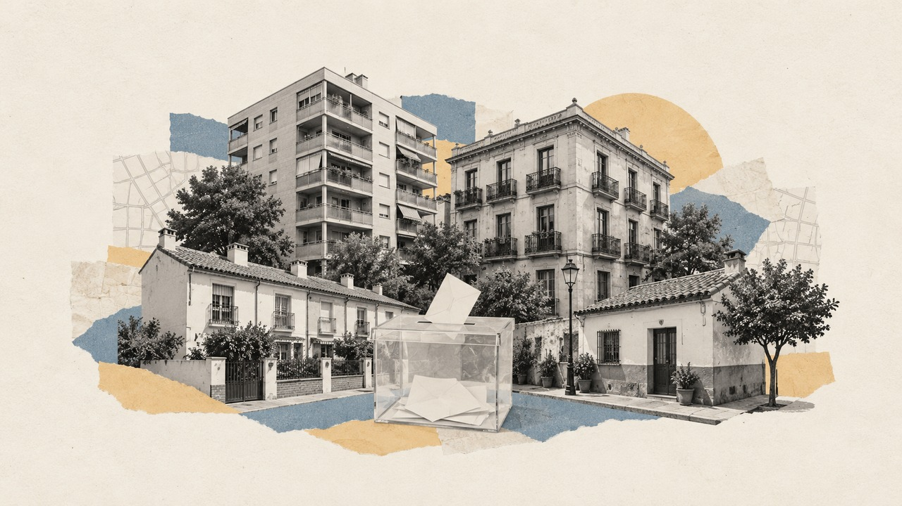

Inicio › Municipios › Barcelona › L'Hospitalet de Llobregat
Barrio de L'Hospitalet de Llobregat · distrito Districte I · Generales 2004-2023
Elecciones en Centre
Cómo vota este barrio de L'Hospitalet de Llobregat, quién vive en él y en qué se separa del resto de la ciudad
Por Nacho G. del Álamo · Actualizado el

DatoEn Centre, en el distrito de Districte I, el PSC fue la fuerza más votada en las elecciones generales del 23 de julio de 2023, con el 40,0 % del voto válido, por delante de Sumar (19,5 %). Votó el 69,8 % de sus 20.477 electores, 7,7 puntos más que el conjunto de L'Hospitalet de Llobregat (62,1 %): es el 1.º de los 12 barrios de la ciudad con más participación.
DatoDonde más se separa Centre del resto de L'Hospitalet de Llobregat es en el voto del PSC: 40,0 %, frente al 46,4 % de la ciudad, 6,4 puntos menos.
DatoViven en Centre 28.261 personas (padrón de 2023), con una edad media de 43,7 años (42,8 en L'Hospitalet de Llobregat). El 13,2 % tiene nacionalidad extranjera, frente al 25,5 % de la ciudad. Según el censo de 2021, el 36,7 % de los adultos tiene estudios superiores (26,0 % en la ciudad) y la tasa de paro era del 10,4 % (14,5 %).
DatoLa renta neta media por unidad de consumo es de 25.280 € al año (19.734 € en L'Hospitalet de Llobregat): el 1.º barrio con más renta de los 12 de la ciudad. El 13,3 % de la población vive por debajo del umbral de pobreza relativa (menos del 60 % de la renta mediana).
Ver Centre calle a calle en el mapa de L'Hospitalet de Llobregat
Sección a sección
DatoCentre tiene 21 secciones censales, la unidad más pequeña con resultados electorales (entre 500 y 2.500 electores cada una). En 2023 ganó el PSC, en 21.
PSOE
DatoDentro del barrio también hay distancia: en la sección que más votó (distrito 1, sección 41) participó el 79,2 %, y en la que menos (distrito 1, sección 30), el 63,0 %. La primera tiene una renta de 31.636 € por unidad de consumo; la segunda, de 23.631 €.
Las 21 secciones de Centre, una a una
| Sección | Censo | Participación | Más votado | Renta |
|---|---|---|---|---|
| Distrito 1, sección 1 | 1.243 | 69,9 % | ■ PSOE (42,8 %) | 27.055 € |
| Distrito 1, sección 2 | 1.151 | 65,7 % | ■ PSOE (47,9 %) | 21.973 € |
| Distrito 1, sección 3 | 584 | 68,7 % | ■ PSOE (38,2 %) | 23.595 € |
| Distrito 1, sección 4 | 680 | 69,7 % | ■ PSOE (36,3 %) | 27.589 € |
| Distrito 1, sección 5 | 824 | 70,9 % | ■ PSOE (35,5 %) | 24.485 € |
| Distrito 1, sección 7 | 1.432 | 67,1 % | ■ PSOE (44,8 %) | 22.665 € |
| Distrito 1, sección 8 | 1.070 | 69,8 % | ■ PSOE (32,5 %) | 26.296 € |
| Distrito 1, sección 9 | 869 | 73,5 % | ■ PSOE (37,6 %) | 25.948 € |
| Distrito 1, sección 10 | 853 | 69,4 % | ■ PSOE (41,2 %) | 23.162 € |
| Distrito 1, sección 11 | 623 | 69,7 % | ■ PSOE (34,2 %) | 26.654 € |
| Distrito 1, sección 12 | 1.233 | 71,5 % | ■ PSOE (38,0 %) | 25.472 € |
| Distrito 1, sección 13 | 1.847 | 73,5 % | ■ PSOE (39,2 %) | 29.585 € |
| Distrito 1, sección 23 | 941 | 68,4 % | ■ PSOE (36,9 %) | 23.616 € |
| Distrito 1, sección 24 | 639 | 73,2 % | ■ PSOE (37,0 %) | 24.976 € |
| Distrito 1, sección 28 | 750 | 68,4 % | ■ PSOE (42,7 %) | 21.814 € |
| Distrito 1, sección 30 | 764 | 63,0 % | ■ PSOE (37,3 %) | 23.631 € |
| Distrito 1, sección 31 | 929 | 65,2 % | ■ PSOE (46,7 %) | 19.947 € |
| Distrito 1, sección 33 | 627 | 66,2 % | ■ PSOE (32,4 %) | 25.185 € |
| Distrito 1, sección 34 | 1.004 | 68,9 % | ■ PSOE (38,7 %) | 25.166 € |
| Distrito 1, sección 35 | 1.095 | 66,6 % | ■ PSOE (45,6 %) | 23.345 € |
| Distrito 1, sección 41 | 1.319 | 79,2 % | ■ PSOE (42,3 %) | 31.636 € |
Resultado de las generales de 2023
DatoVoto por partido sobre voto válido (candidaturas más blancos) en las 21 secciones de Centre. La línea discontinua marca el resultado del conjunto de L'Hospitalet de Llobregat.
| Partido | Voto | Votos | L'Hospitalet de Llobregat |
|---|---|---|---|
| PSOE | 40,0 % | 5.667 | 46,4 % |
| Sumar / Podemos / IU | 19,5 % | 2.764 | 15,3 % |
| PP | 12,4 % | 1.755 | 15,5 % |
| ERC | 11,2 % | 1.594 | 7,7 % |
| Vox | 6,4 % | 905 | 8,4 % |
| Junts / CiU | 6,0 % | 854 | 3,1 % |
| Otros | 3,8 % | 532 | 3,0 % |
De 2004 a 2023
DatoDesde 2004, el barrio ha cambiado de partido más votado 2 veces: el PSC ganó en 6, Sumar ganó en 2 de 8 elecciones. La participación ha pasado del 77,9 % en 2004 al 69,8 % en 2023.
| Elección | Participación | Más votado | PP | PSOE | Vox | Sumar / Podemos / IU | Ciudadanos | ERC | Junts / CiU |
|---|---|---|---|---|---|---|---|---|---|
| 2004 | 77,9 % | PSOE | 14,9 % | 45,5 % | — | 7,9 % | — | 12,8 % | 16,2 % |
| 2008 | 73,5 % | PSOE | 15,5 % | 51,5 % | — | 6,2 % | 1,0 % | 5,6 % | 16,5 % |
| 2011 | 69,9 % | PSOE | 18,3 % | 32,0 % | — | 12,4 % | — | 5,4 % | 22,1 % |
| 2015 | 76,1 % | Sumar / Podemos / IU | 10,2 % | 18,6 % | — | 32,6 % | 13,6 % | 11,7 % | 9,3 % |
| 2016 | 70,1 % | Sumar / Podemos / IU | 12,1 % | 19,4 % | — | 31,7 % | 11,8 % | 13,4 % | 8,4 % |
| abr. 2019 | 80,8 % | PSOE | 4,5 % | 29,1 % | 3,0 % | 19,6 % | 11,6 % | 20,7 % | 6,7 % |
| nov. 2019 | 76,2 % | PSOE | 6,4 % | 26,9 % | 5,4 % | 19,8 % | 6,0 % | 19,8 % | 7,5 % |
| 2023 | 69,8 % | PSOE | 12,4 % | 40,0 % | 6,4 % | 19,5 % | — | 11,2 % | 6,0 % |
Con las secciones censales de 2023: los resultados de cada elección son los de las secciones que ya existían con el mismo código. Las familias agrupan a cada partido con sus antecesores y coaliciones (Podemos, IU y Sumar; Junts y CiU).
Quién vive en el barrio
| Centre | L'Hospitalet de Llobregat | |
|---|---|---|
| Habitantes (2023) | 28.261 | 278.115 |
| Edad media | 43,7 | 42,8 |
| Menores de 18 años | 16,4 % | 16,0 % |
| 65 años o más | 20,8 % | 19,2 % |
| Nacionalidad extranjera | 13,2 % | 25,5 % |
| Nacidos fuera de España (2021) | 16,7 % | 32,5 % |
| Con estudios superiores (2021) | 36,7 % | 26,0 % |
| Tasa de paro (2021) | 10,4 % | 14,5 % |
| Renta neta por unidad de consumo | 25.280 € | 19.734 € |
| Renta neta por habitante | 17.128 € | 13.302 € |
| Bajo el umbral de pobreza relativa | 13,3 % | 24,9 % |
Medias de las secciones del barrio ponderadas por su población. Padrón y Atlas de Distribución de Renta de los Hogares del INE (2023); estudios, paro y lugar de nacimiento, del censo de población de 2021. La relación entre estas cifras y el voto es entre barrios, no entre personas.
Otros barrios del distrito de Districte I
- Sant Josep: el PSC, participación del 66,9 %
- Sanfeliu: el PSC, participación del 66,8 %
Más datos
- Todos los barrios de L'Hospitalet de Llobregat
- Barrios de las grandes ciudades de España
- Elecciones en L'Hospitalet de Llobregat, desde 1977
- Participación electoral por barrio en toda España
- Voto y renta por barrios en toda España
Método y fuentes
- Qué es el barrio
- Los límites de barrios y distritos son los de OpenStreetMap (© colaboradores de OpenStreetMap, licencia ODbL), que en la mayoría de ciudades copian la división oficial del ayuntamiento. Cada sección censal del INE se asigna al barrio con el que comparte más superficie; las que caen menos de la mitad dentro de un barrio no se asignan. Como las secciones no siempre siguen los límites de los barrios, alguna manzana del borde puede quedar en el barrio vecino.
- Datos
- Resultados oficiales por mesa del Ministerio del Interior (Infoelectoral) agregados por sección censal, sin el voto de los residentes en el extranjero (CERA). Renta y población: Atlas de Distribución de Renta de los Hogares y padrón del INE (2023); estudios, paro y lugar de nacimiento: censo de población de 2021.
- Cómo se calcula
- Porcentajes sobre voto válido (candidaturas más votos en blanco), sumando votos de las secciones, no promediando porcentajes. Participación: votantes entre censo. Agrupación de partidos y límites: metodología del mapa.
- Datos abiertos
- Las cifras salen de las descargas del mapa (CSV, licencia CC BY 4.0); la relación entre secciones y barrios está en data/barrios/secciones_barrio.csv.
- Autoría y revisión
- Nacho G. del Álamo. Publicado el 22 de octubre de 2026; actualizado el 22 de octubre de 2026. Política editorial · Correcciones